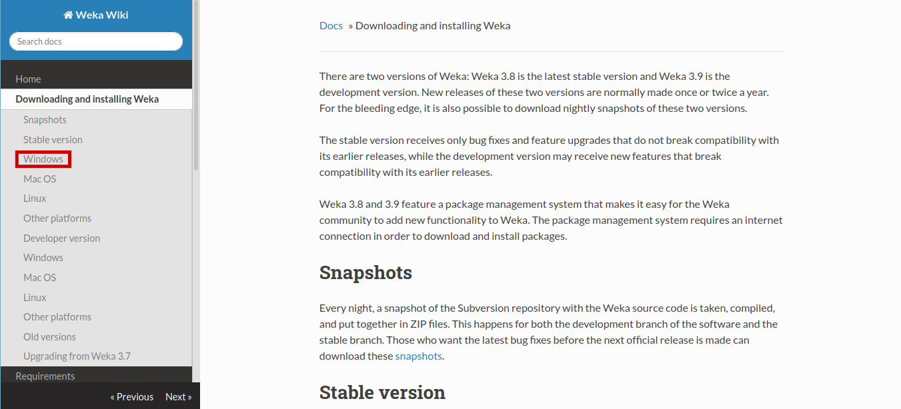
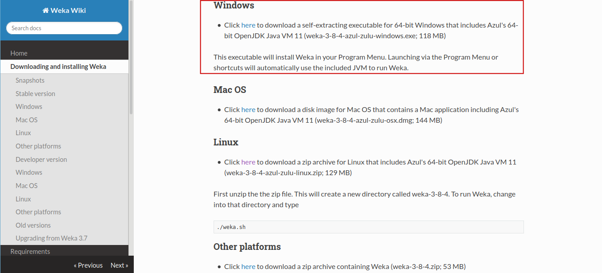
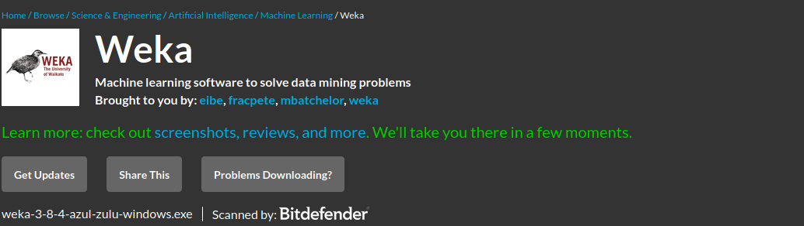
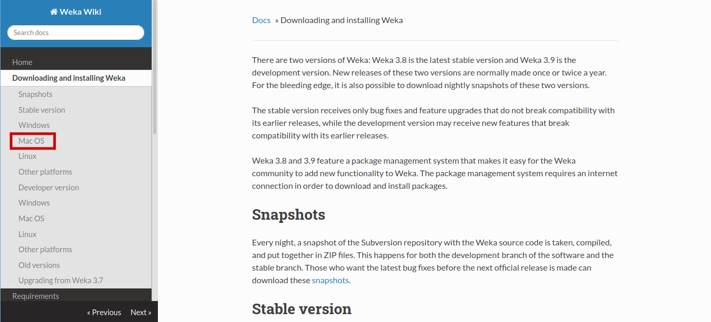
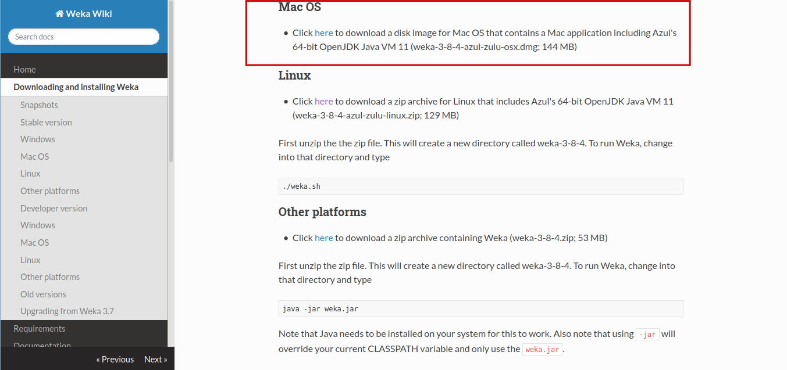
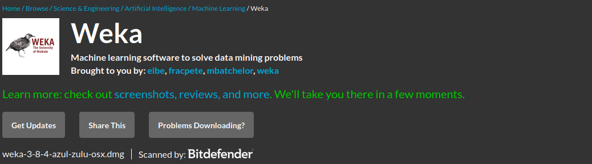
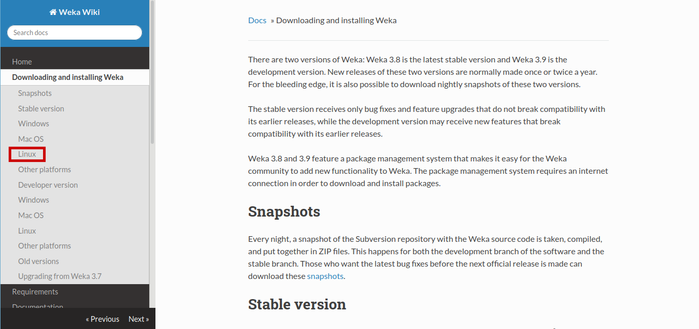
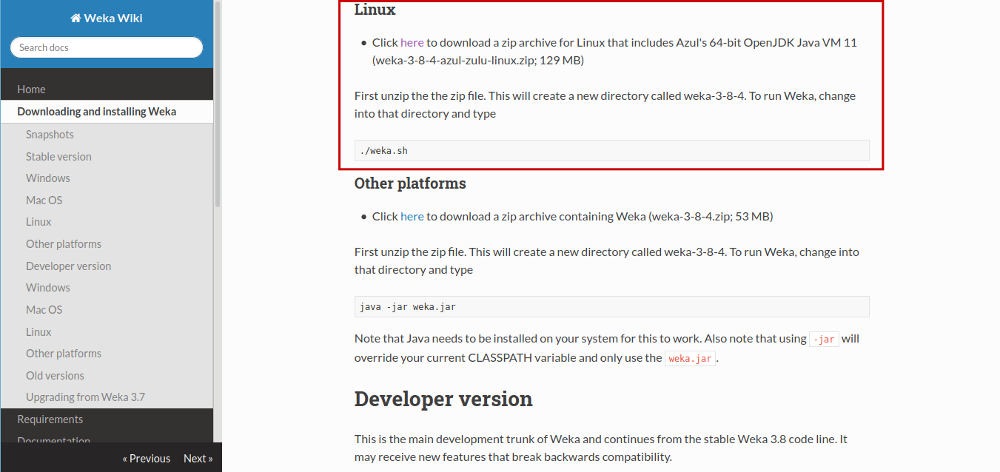
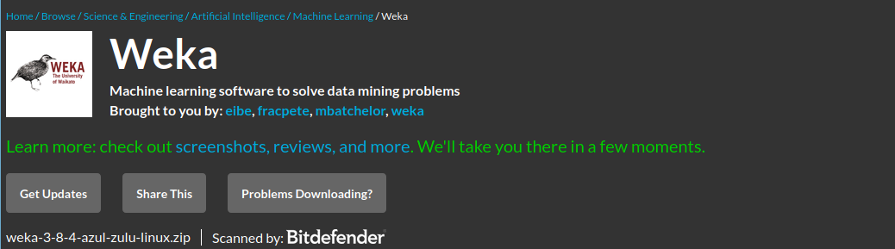

Windows
Após seguir os passos anteriores, selecione a seguinte opção.

Depois de selecionar a opção indicada acima, selecione a seguinte opção.
Se tudo ocorreu como devia e você seguiu os passos irá ser redirecionado para esta página.
Após o termino do tempo determinado o download irá começar automaticamente.
Após aceitar todos os termos e condições do Weka, será aberta uma tela como esta.

Mac OS
Após seguir os passos anteriores, selecione a seguinte opção.

Depois de selecionar a opção indicada, selecione a seguinte opção.
Se tudo ocorreu como devia e você seguiu os passos irá ser redirecionado para esta página.
Após o termino do tempo determinado o download irá começar automaticamente.
Após abrir o arquivo e aceitar todos os termos de uso será aberta uma tela como esta.
Linux
Após seguir os passos anteriores, selecione a seguinte opção.

Depois de selecionar a opção indicada, selecione a seguinte opção.
Se tudo ocorreu como devia e você seguiu os passos irá ser redirecionado para esta página.
Após o termino do tempo determinado o download irá começar automaticamente.
Após o Download do arquivo abra seu terminal.
Navegue até o destino onde está o arquivo baixado.